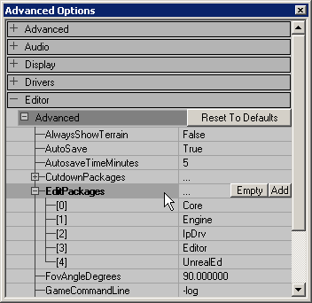
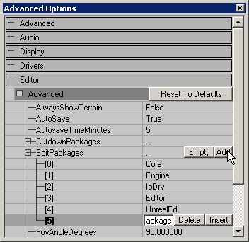

Add EditPackage
This is a Basic Procedure tutorial page. It explains how to perform a single procedure which is required in many different contexts.
Overview
- EditPackages are a list of unreal package files that will be automatically loaded on startup of the editor.
- They are used by UnrealEd and Ucc.
- They are defined in Game Ini File (ie: in UT2004 it's UT2004.ini).
- EditPackages are loaded in the same order they are defined in the ini file.
- Editor will crash if EditPackage cannot be loaded:
- The package may not exist or be invalid.
- The package may be in directory that wasn't defined as valid Path in game ini.
- The package may require another package to be loaded first.
- EditPackages are defined using file name only.
- Do not add package file extension
- Do not add package file path
Tips
- Editor startup time can be reduced from minutes to couple seconds by removing game-specific EditPackages.
Configure EditPackages using UnrealEd
View EditPackages
| In menu View select Advanced Options. Navigate to Editor >> Advanced >> EditPackages. |
 |
Add EditPackage
| Click the Add button. A new empty field will be added to the bottom. Enter the name of your package into the empty field. Close the window. |
 |
Configure EditPackages using Text Editor
View EditPackages
- Make sure that game and editor are closed.
- Open your Game Ini File (ie: UT2004.ini) in a text editor (ie: Notepad).
- Find section [Editor.EditorEngine]
- Find EditPackages list in it.
Add EditPackage
- Add your package to the end of EditPackages list unless instructed otherwise.
- Make sure you didn't added any empty lines to the section.
- Save the file.
Remove EditPackage
- Find your package in the EditPackages list and remove that line.
- Make sure you didn't added any empty lines to the section.
- Save the file.